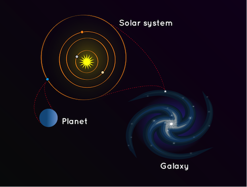

What is a Galaxy?
A galaxy is a huge collection of gas, dust, and billions of stars and their solar systems, all held together by gravity.
A galaxy is a huge collection of gas, dust, and billons of stars and their solar systems. A galaxy is held together by gravity. Our galaxy, the Milky Way, also has a supermassive black hole in the middle.
Where are we in our home galaxy?
Galaxies are very big and enormous which makes it more interesting to know about. Average Size galaxy can reach up to 100,000 lightyears in diameter. Have you ever wondered were would our Solarsystem lie in our home galaxy and were would earth lie in it.
Here's an example of it.Check out!

Illustration of solarsystem in a galaxy
 Representation of Milkyway galaxy
Representation of Milkyway galaxy
and where we are.
What we see in night sky!
Night sky is worth watching if you are in absolute dark area and no light or oustide cities towards countryside we can see the dust band of the Milkyway galaxy.Make note, darker the place better it is to observe milkyway band.
 The Milkyway Band
The Milkyway Band